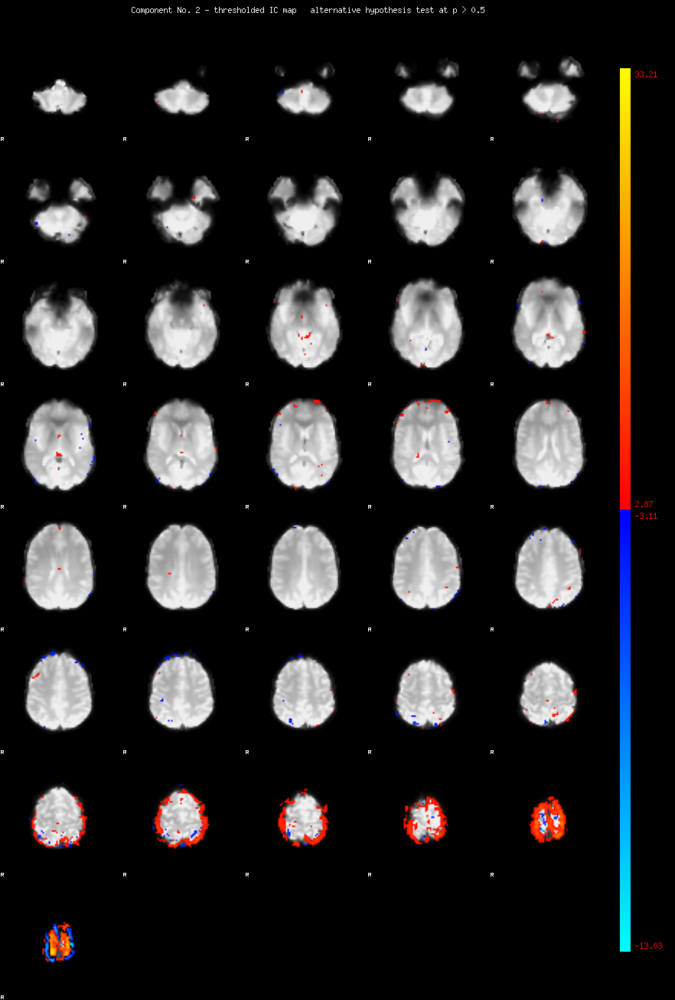
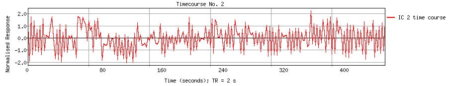
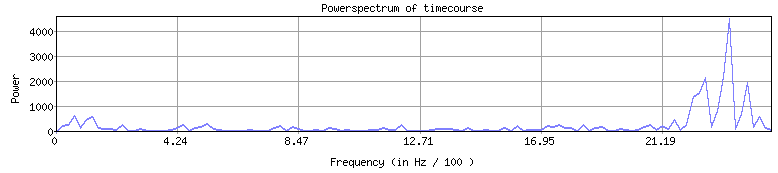

<
-
>
MELODIC Component 2
2.81 % of explained variance; 2.03 % of total variance

Temporal mode


This page produced automatically by
MELODIC
Version 3.15 - a part of
FSL - FMRIB Software Library
.